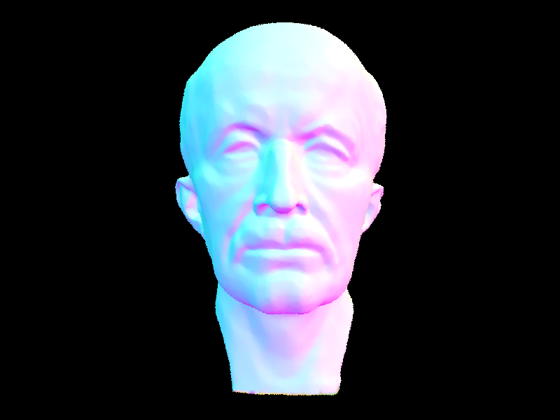
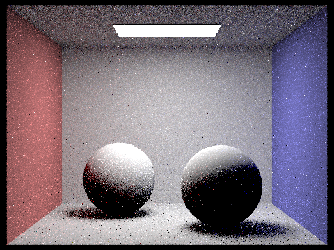

Overview
For this project, I implemented de Casteljau's algorithm to build Bezier Curve and surfaces, calculated area-weighted vertex normals for Phong shading, and loop subdivison. Now I can construct a teapot from points, give it nice shading and upsample it to a higher resolution. It was fantastic to be able to implement what we learned in lecture and see it in action. I now have better appreication for the actual effect of what we learned.
Task 1
To generate a ray, we first take the camera's origin as (0,0,0) and the camera's direction as (0,0,-1). We then map the coordinate of the pixel on the normalized image plane to the camera space. This is done by defining its z-coordinate as -1 and scaling the normalized image plane by height and width of the sensor as defined by the field of view. To get the values of each pixel, we uniformly sample points on the pixel and calculated the average color of the rays passing through those points. To get the color of the ray, we check if the ray intersects with any of the primitives, and calculate the normal and bsdf at the nearest intersection.
I implemented Moller-Trumbore's algorithm to calculate the intersection of a ray with a triangle. The algorithm yields t, the time of intersection, and b2 and b3, the barycentric coordinates of the intersection point. If t is smaller than t_min or larger than t_max (the time of the nearest intersection and the time of the farthest intersection), the ray does not intersect with the triangle. If b2 and b3 are both smaller than 0 or larger than 1, the ray does not intersect with the triangle. Similiar, b1 can be calculated by b1 = 1 - b2 - b3. If b1 is smaller than 0 or larger than 1, the ray does not intersect with the triangle. Finally t_max is updated to be equal to t so that intersection beyond t will not be computed.


Task 1
To construct BVH, I first counted the number of primitives in the current node. If the number of primitives is smaller than variable max_leaf_size, I created a leaf node and stored the primitives in the node. Otherwise, I calculated the long axis of the bounding box, and the average centroid coordinate of the primitives along that axis. I then then partioned the primitives into two groups, one with primitives whose centroid is smaller than the average centroid, and the other with primitives whose centroid is larger than the average centroid. I then created an internal node and recursively called the function to construct the left and right child nodes on the two groups. I tried out a few methods of selecting the splitting point, and using the average happens to be the fastest! For the cow mesh, it somewhat evenly splits the triangles into equally sized groups, thus speeding up the process of finding intersection.
The rendering with BVH is significant faster for scenes with moderately complex geometries. This is because using BVH allows use to prune away groups of primitives instead of having to iterate throughe every primitive. Rendering Bench took 914.7761s without BVH and 5.123 s with BVH acceleration. Rendering bunny took 450.3942s s without BVH and 2.344 s with BVH acceleration.
Task 3
To implement direct hemisphere sampling, I first sampled random directions from the hemisphere centered at the hit point. I constructed a ray from the hit point to the sampled direction (offset by a small constant). If the ray intersects with any of the primitives, I calculated the light emission at the intersection point, and the cosine of the angle between its normal and the sampled direction. I then calculated the radiance of the ray by multiplying the light emission by the cosine of the angle between its normal and the sampled direction, and the bsdf at the hit point. As per Monte Carlo Equation, I summed together the radiance of all the sampled rays and divided by the probability of sampling each ray (2 * PI);
Renders with direct hemisphere sampling
For importance light sampling, instead of randomly sampling points in the hemisphere, we sampled directions that points towards a light source. To implement lighting sampling, I first iterated through all the light source in the scene. For each light source, I estimated its radiance by sampling random directions from the hit point to the light source using the light's L_sample function. Since all samples from point lights are the same, they are only sampled once. Other light sources are sampled n_samples times. Similar to direct hemisphere sampling, I constructed a ray from the hit point to the sampled direction (offset by a small constant). Unlike, direct hemisphere sampling, we know that the hit point is lit by the light source if it does not intersect with any primitives. If that's the case, we calculated the radiance by multiplying the light emission by the cosine of the angle between its normal and the sampled direction, and the bsdf at the hit point. As per Monte Carlo Equation, this radiance is weighted by its pdf and summed together with the radiance of all the other samples. I then returned the average of all radiances.
Renders with importance lighht sampling
1 light ray
4 light rays
16 light rays
64 light rays
When comparing uniform hemisphere sampling and light sampling, the latter is generally more effective at reducing noise in soft shadows. Light sampling considers the specific light source in the scene and samples rays only from that light source, whereas uniform hemisphere sampling samples rays from all directions around the shading point. Light sampling is more efficient in reducing noise because it focuses only on the light source, which has the most significant impact on the soft shadows. In contrast, uniform hemisphere sampling samples more widely around the shading point, which may include irrelevant directions that don't contribute much to the lighting of the scene. Overall, light sampling is more efficient and effective in reducing noise in soft shadows.
Task 4
To implement indirect lighting, I implemented at_least_one_bounce function. This function first called the direct lighting function to estimate the direct radiance landing at the hit point. I then sample a random direction using the hit point's bsdf sample_f function. I constructed a ray from the hit point to the sampled direction (offset by a small constant), and incremented the ray's depth by one. I then recursively called the at_least_one_bounce function on the constructed ray which gives me the radiances of future bounces. I then multipled this value with the bsdf at the hit point, and the cosine of the angle between its normal and the sampled direction. As per Monte Carlo equation, I weighted this value by the pdf of the sampled direction, and summed together with the radiance of all the other samples. I then returned the average of all radiances. To further elaborate on the stopping condition, I first checked if the ray's depth is greater than the max_ray_depth. If that's the case, I returned the direct radiance. I also implemented russian roulette which stops the recurssion with a probability of 0.3. This probability is factored into the Monte Carlo estimation. I also modifed raytrace_pixel function such that the initial ray has a depth of 1.
Image rendered with global illumination
Image Rendered with direct illumination only and non-drect illumination only
CBBunny rendered
0 max depth
1 max depth
2 max depth
3 max depth
100 max depth
Spheres rendered with different samples per pixel
1 sample per pixel
2 sample per pixel
4 sample per pixel
8 sample per pixel
16 sample per pixel
64 sample per pixel
1024 sample per pixel
Task 5
I implemented adaptive sampling to check when the samples converge. I added a for loop in the raytrace_pixel which checks if the sample converges every x number of samples. To check convergences, I summed together the illumination of the rays and the squared of the illumination of the rays and plugged them through the equation given in the project specs to check if they are within 1 standard deviation. If it has converged, I will terminate early. Unfortately, my code did not finish running before the deadline so I have no photos to show, but pls check my code - I believe I have implemented it correctly!